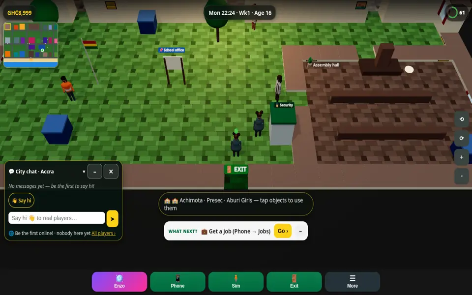

Cape Coast school life, free online
Experience Cape Coast in Ghana Life: Mfantsipim, Adisadel, Wesley Girls and Holy Child SHS, the beach and the castle town. Free multiplayer browser game.
▶ Play Ghana Life free — online multiplayer
What you can do
- Enrol at famous SHS campuses
- Inter-schools quiz and athletics
- Break-bounds stealth mini-game
- Beach life
Cape Coast is famous for its senior high schools. Enrol, attend classes and prep, join the inter-school quiz and sports, and maybe break bounds at night (if you dare).
Play with real people
Ghana Life is a free multiplayer browser game. Everyone you chat with is a real player — make friends, form a crew and climb the weekly leaderboards. It works on phones and computers with no download.
Start playing nowMore of Ghana Life
Live your Accra life in 3D · Kumasi · Takoradi · Enzo · Detty December · Play the game